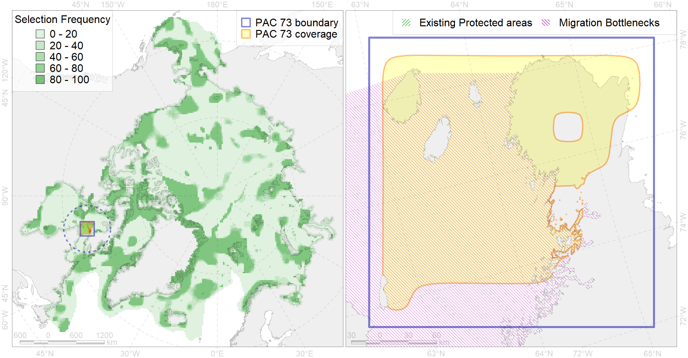

Region 73
Region 73
“ArcNet” scenario 33 achievement for region 73.
Use Accenter for advanced mode.

0
CFs inside of Region completely
2
CFs inside of Region at quarter
3
Complete-targets achievement by Region
5
Half-targets achievement by Region
| CF | Name | Target Achievement for Region | Proportion of Target Achievement in Region | Amount Proportion in Region |
|---|---|---|---|---|
| 3022 | Marginal Ice Zone distribution in April in the Hudson Bay LME | 259.6% | 61.7% | 33.3% |
| 3131 | polynya Hudson St | 196.5% | 74.2% | 25.5% |
| 7170 | IV.2.3. Hudson Bay slope | 125.0% | 52.6% | 16.9% |
| 9025 | polar bear denning areas of FB (Foxe Basin) subpopulation | 21.3% | 21.2% | 15.1% |
| 1011 | Atlantic Walrus haulouts in Nunavut and West Greenland | 13.0% | 13.0% | 12.6% |
| 5030 | Beluga of the Ungava Bay winter distribution | 85.1% | 21.2% | 11.5% |
| 5033 | Beluga of the Western Hudson Bay winter distribution | 21.3% | 21.2% | 11.5% |
| 1003 | Atlantic Walrus Wintering Areas in Canada | 12.8% | 11.1% | 9.1% |
| 4035 | Feeding area of the Lake trout (Salvelinus namaycush) (F32) | 47.2% | 19.1% | 7.3% |
| 5104 | Bowhead whale Baffin population winter distribution | 23.1% | 11.5% | 6.2% |
| 5042 | Bowhead whale winter concentrations in the Baffin Bay | 10.0% | 6.8% | 5.4% |
| 7144 | III.2.1.3. Hudson Trough | 41.3% | 12.9% | 5.3% |
| 9007 | polar bear of the FB (Foxe Basin) subpopulation distribution | 14.9% | 12.0% | 5.0% |
| 2022 | Harp seal foraging areas in the Hudson Bay | 18.0% | 17.9% | 4.8% |
| 7142 | III.2.1.1. Baffinian shelf | 56.5% | 7.8% | 4.1% |
| 1002 | Atlantic Walrus Summer Distribution in Canada | 11.0% | 7.5% | 4.1% |
| 7045 | Fox Basin trnasitional zone | 22.4% | 10.7% | 3.8% |
| 5039 | Bowhead whale autumn concentrations in the Baffin Bay | 7.3% | 7.2% | 3.6% |
| 4075 | Fish zoogeography, Arctic Region, High-Arctic Shelf Province, Hudson District | 31.6% | 11.3% | 3.2% |
| 2048 | Ringed seal whelping areas in the Hudson Bay area | 11.8% | 11.0% | 3.1% |
| 4007 | Feeding/nursery area of the Cisco (Coregonus artedi) (F 13) | 7.7% | 5.4% | 3.1% |
| 7139 | III.1.1.6. Foxe Basin middle shelf | 24.2% | 9.3% | 2.8% |
| 5103 | Bowhead whale Baffin population spring-autumn distribution | 9.8% | 5.4% | 2.8% |
| 3035 | Marginal Ice Zone distribution in July in the Hudson Bay LME | 9.6% | 6.7% | 2.3% |
| 7138 | III.1.1.5. Foxe Basin shallow shelf | 25.0% | 8.5% | 2.3% |
| 2019 | Harbour seal range in the North Atlantic region | 28.5% | 4.3% | 1.9% |
| 6015 | Black guillemot (Cepphus grylle mandti) breeding grounds | 14.1% | 3.0% | 1.8% |
| 2010 | Bearded seal whelping areas in the Hudson Bay | 6.2% | 6.2% | 1.7% |
| 4029 | Feeding area of the Arctic charr (Salvelinus alpinus), anadromous populations (F28) | 3.6% | 3.1% | 1.5% |
| 4055 | Range of the Shorthorn Sculpin (Myoxocephalus scorpius) (F 46), American populations | 44.5% | 2.5% | 1.5% |
| 5112 | Arctic Cetaceans (beluga, bowhead, narwhal) winter habitats as predicterd by MIZ | 3.3% | 2.7% | 1.5% |
| 7169 | IV.2.2. central Hudson Bay | 30.4% | 9.0% | 1.4% |
| 8037 | Salt marshes of the Hudson Bay LME | 3.4% | 2.4% | 1.1% |
| 4046 | Range of the Thorny Skate (Amblyraja radiata) (F 3) | 11.2% | 2.1% | 0.9% |
| 6099 | 6099 Rissa tridactyla tridactyla breeding colonies | 1.2% | 1.2% | 0.9% |
| 6029 | Glaucous gull (Larus hyperboreus euceretes) breeding grounds | 6.1% | 1.4% | 0.8% |
| 6083 | Thick-billed murre (Uria lomvia lomvia) wintering grounds | 2.9% | 2.1% | 0.8% |
| 4003 | Range of the Atlantic Capelin (Mallotus villosus) (F10) | 21.7% | 1.8% | 0.7% |
| 4053 | Range of the Fourhorn Sculpin (Myoxocephalus quadricornis) (F 45), Euro-Asian populations | 22.6% | 1.3% | 0.7% |
| 4048 | Feeding/nursery area of the ogac (Gadus ogac ) (F 41) | 4.5% | 1.1% | 0.7% |
| 4059 | Range of the Greenland Halibut (Reinhardtius hippoglossoides) (F 49) | 17.5% | 1.5% | 0.6% |
| 4031 | Feeding area of the Brook Trout (Salvelinus fontinalis) (F 29) | 1.9% | 0.8% | 0.4% |
| 4017 | Feeding/ migration area of the Greenland Shark (Somniosus microcephalus) (F1) | 1.3% | 0.8% | 0.3% |
| 6106 | 6106 Urilomvilomvibreeding colonies | 0.6% | 0.4% | 0.3% |
| 4041 | Range of the Polar Cod (Boreogadus saida) (F35) | 1.9% | 0.7% | 0.3% |
| 6047 | Black-legged kittiwake (Rissa tridactyla pollicarius) breeding colonies | 0.2% | 0.2% | 0.1% |
| 4032 | Range of the Arctic skate (Amblyraja hyperborea) (F2) | 3.7% | 0.3% | 0.1% |
| 4011 | Feeding area of the Lake whitefish (Coregonus clupeaformis) (F 16) | 0.2% | 0.2% | 0.1% |
| 7028 | Hudson Bay enclave | 0.1% | 0.0% | 0.0% |
| 3127 | polynya Foxe | 0.0% | 0.0% | 0.0% |
| 7145 | III.2.1.4. Ungava -Labradoran shelf | 0.0% | 0.0% | 0.0% |